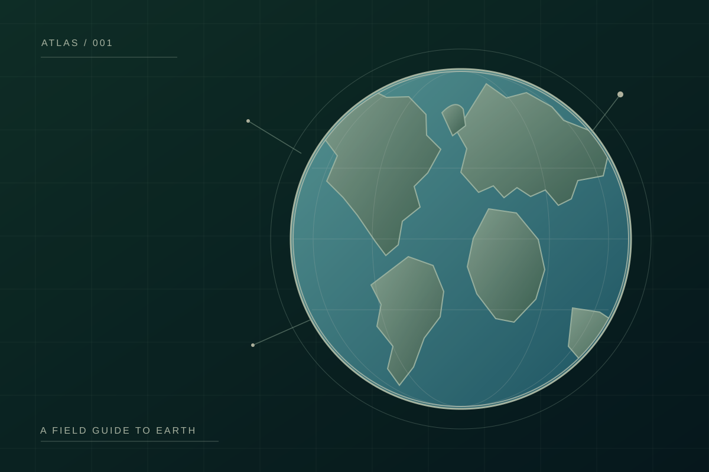
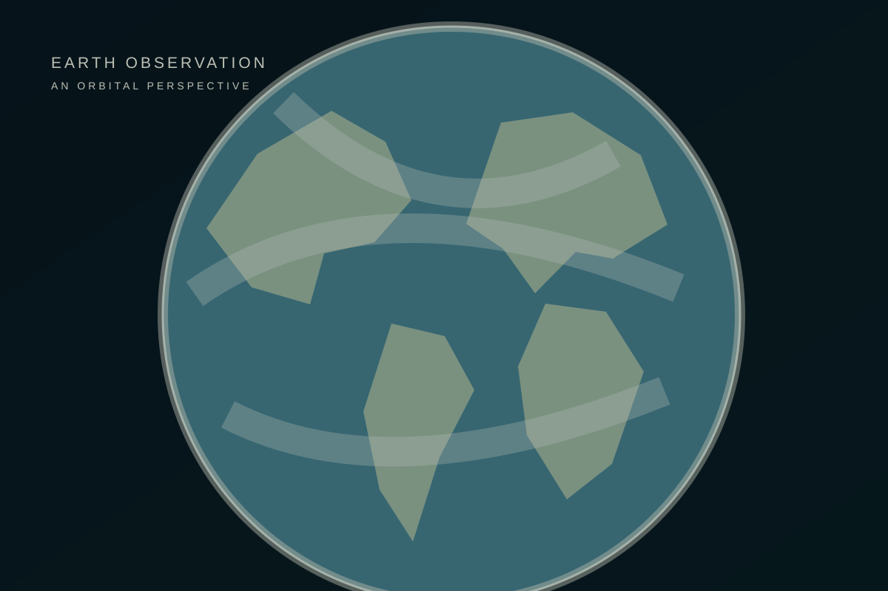

AN ATLAS OF THE EVERYDAY EXTRAORDINARY
Look closer
at the world.
Beyond the lines on a map lies a living planet. Discover the landscapes, forces, and stories that make Earth what it is.
INDEPENDENT / CURIOUS / OPEN

One planet.Infinite things to discover
71%of Earth's surface is ocean
05Great Lakes in North America
08carefully researched field stories
THE EDITOR'S SELECTION / 01
Stories worth exploring.
Familiar places, unexpected perspectives, and the processes that shape our surroundings.

The Great Lakes: North America’s Inland Seas
Five freshwater lakes, a glacial past, and a watershed that shapes an entire region.

Reading the Land: How Topographic Maps Work
Contour lines make hills, valleys, ridges, and elevation legible on a flat page.

The Restless Earth: A Guide to Tectonic Plates
Why continents drift, ocean floors spread, and earthquakes cluster along boundaries.

Seeing Earth from Space
How orbital instruments turn light, heat, and repeated observations into geographic knowledge.
A NEW POINT OF VIEW
The world is more interesting when you know how to read it.
From the bend of a river to the motion of a continent, start with a story and see where it leads.